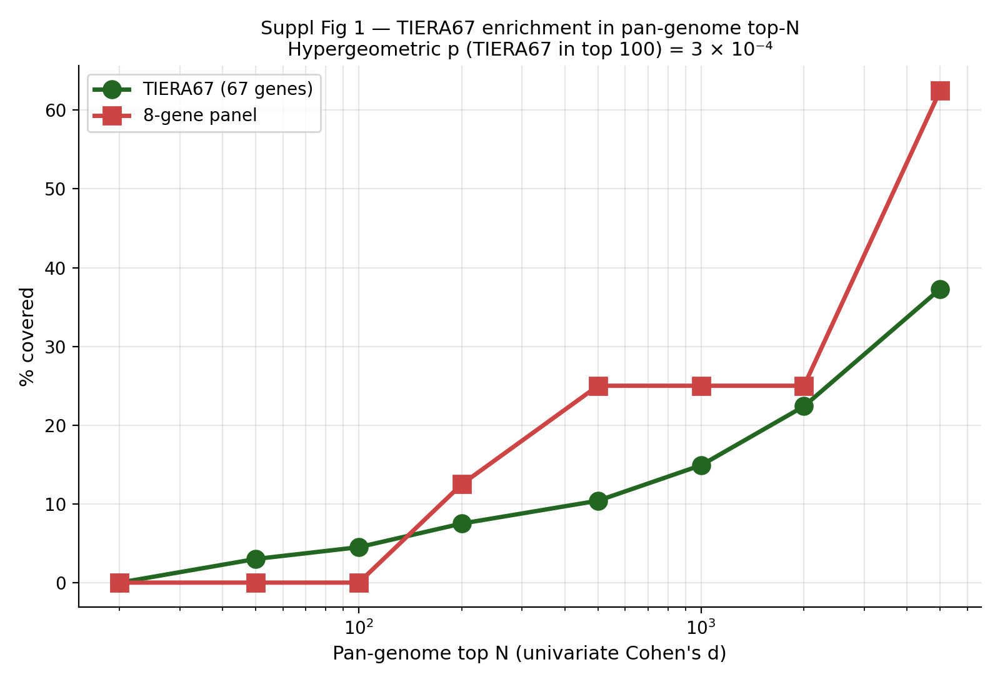
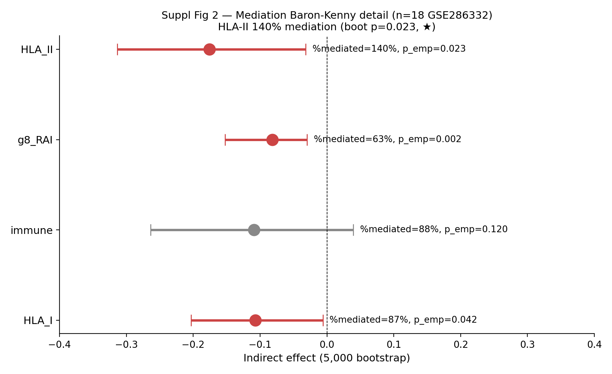
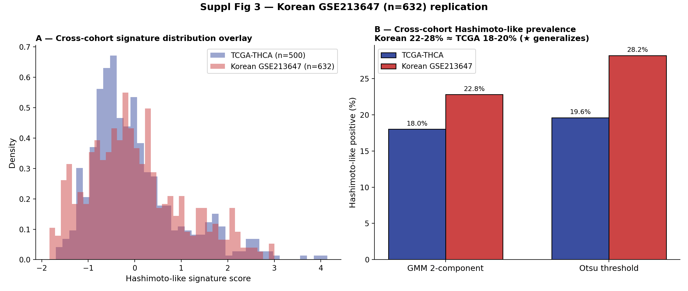
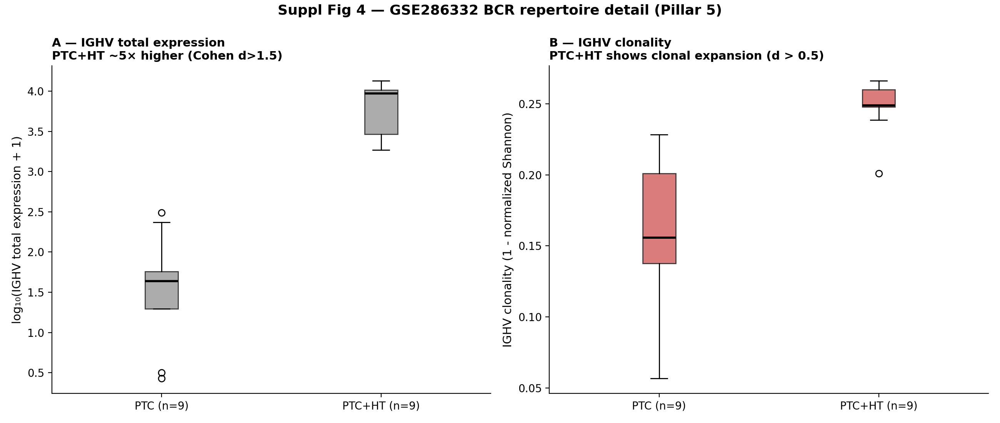
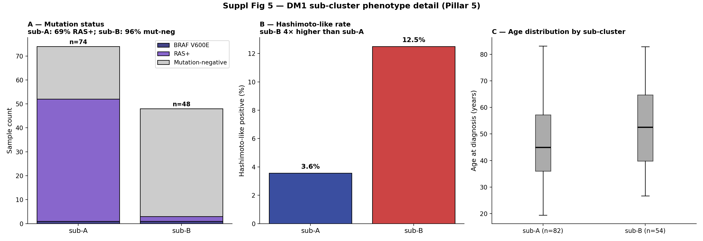
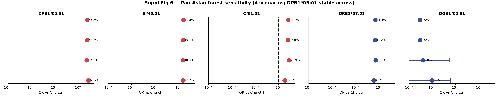

Overview
Pillar 1
Pillar 2
Pillar 3
Pillar 4
Pillar 5 ★
Suppl Figs
Suppl Tables
Bundang Outreach
Timeline
Phase 0 Cancer Paper — Yu professor Review Dashboard
Date: 2026-05-03 (marathon mode entry, 5/4-6/13 6-week writing)
Author: Seungho Cook (lead/corresponding) · Senior author: Yu professor
Target venue: Cell Rep Med (IF 14) primary / JCI Insight (IF 8) backup / Nat Commun stretch (with Bundang Graves')
Overview — 5-Pillar Status
# Pillar Status Key signal 1 Korean Pan-Asian HLA cohort n=874 STRONG DPB1*05:01 53.2% Korean > 44.0% Chu GD; 6 alleles direction-consistent 2 GSE286332 PTC vs PTC+HT STRONG 10,380 DEGs; IFN-γ FDR=2e-4; HLA-II d=+3.65 3 Driver mRNA neutrality STRONG BRAF mRNA d=−0.04 vs WT; Driver_anchor cluster ARI=0 4 Pan-genome cluster robustness STRONG TIERA67 ARI=0.90 ≈ pan-genome 0.92; 8-gene alone 0.49 (honest) 5 ★ Autoimmune-PTC mechanism STRONG HLA-II 140% mediation; TCGA Hashimoto-DM2 OR=0.20 p=6e-10; TLS d=+1.96
Pillar 1 — Korean Pan-Asian HLA Forest Meta
Forest plot
Pan-Asian HLA forest meta. Korean PTC pool (n=874) sits between Han Chinese ctrl 31% and GD 44% for DPB1*05:01 (red bars, Korean). Random-effects DerSimonian-Laird pooled OR with I² annotation.
Key allele frequencies (3-cohort)
Allele Chu ctrl Korean PTC Chu GD Pooled OR (95% CI) DPB1*05:01 31.3% 53.2% 44.0% 2.16 [1.65, 2.83] C*01:02 10.9% 24.1% 18.4% 2.16 [1.53, 3.06] B*46:01 6.5% 10.3% 14.1% 2.02 [1.41, 2.89] DRB1*07:01 (protective) 15.3% 11.4% 7.1% 0.55 [0.33, 0.91] DQB1*02:01 (protective) 17.8% 0.0% 10.9% 0.57 [0.49, 0.66]
★ Korean PTC pool DPB1*05:01 53.2% > Chu GD 44.0% — Korean PTC has more pronounced autoimmune-thyroid risk allele profile than Chinese GD. Within-Korean Cochran's Q I²=0% (perfectly homogeneous). Sensitivity 4-scenario stable ±2%.
Pillar 2 — GSE286332 PTC vs PTC+HT
GSE286332 (n=9 PTC vs n=9 PTC+HT, Korean). (A) 10,380 DEGs at padj<0.05 (B) GSEA Hallmark IFN-γ FDR=2e-4 (C) 8-gene RAI per-gene; PAX8 d=−2.32, NKX2-1 d=−1.92, FOXE1 d=−1.75 (D) HLA-II module heatmap, Cohen d=+3.65.
Pillar 3 — Driver mRNA Neutrality
(A) BRAF mRNA × V600E mutation status, Cohen d=−0.04, p=0.57 (NULL). (B) Driver single-feature AUC <0.7 for all (BRAF 0.602, TERT 0.578). (C) TIERA67 67-gene Cohen d ranking: 8-gene (red) at top tier; Driver_anchor (navy) at bottom. (D) Driver_anchor 12 alone cluster ARI=−0.007 (random).
Pillar 4 — Pan-Genome Cluster Robustness
(A) ARI vs DM1/DM2 across 6 panels: Driver-only ARI=−0.007 (random), 8-gene 0.49 (honest), TIERA67 0.90 ≈ pan-genome top-5000 0.92. (B) TIERA67 enrichment in pan-genome top-N; hypergeometric p=3e-4.
Pillar 5 — Autoimmune-PTC Mechanism (★ paper-shaping)
(A) GSE286332 P_DM1 spectrum mediation (HLA-II 140% — over-mediation/full pathway). (B) TCGA Hashimoto-like × DM forest (5 thresholds, OR up to 5×, Fisher p=6e-10). (C) BCR/TLS heatmap (TLS d=+1.96, IGHV clonality d>0.5, AICDA up). (D) DM1 sub-A vs sub-B: sub-A 69% RAS+ FVPTC core, sub-B 96% mut-neg NBNR + 4× Hashimoto-overlap.
★ Cross-cohort generalization: TCGA Hashimoto-like 18-30% (DM2-enriched p=6e-10); Korean GSE213647 (n=632) Hashimoto-like 22-28% (replicates); Korean sub-B-like rate 47-53% (replicates K2 NBNR phenotype).
Supplementary Figures (SF1-SF6)
SF1 — TIERA67 pan-genome rank ladder 
SF2 — Mediation Baron-Kenny detail 
SF3 — Korean GSE213647 replication detail 
SF4 — GSE286332 BCR repertoire detail 
SF5 — DM1 sub-cluster phenotype detail 
SF6 — Pan-Asian sensitivity 4-scenario forest 
Supplementary Tables (S1-S8)
S1: Cohort assembly (5 cohorts × 8 fields)
S2: TIERA67 67-gene candidate pool (7 categories)
S3: GSE286332 top 300 DEGs (full 29,672 in repository)
S4: Pan-Asian HLA per-allele forest + Korean sub-cohort + Cochran's Q
S5: Mediation Baron-Kenny (4 mediators)
S5b: OLS decomposition (R²=0.756)
S6: TCGA Hashimoto × DM cross-tab (6 thresholds)
S7: Cross-cohort generalization (TCGA + Korean + GSE286332)
S8a/b/c: DM1 sub-cluster score profile + clinical + mutation×Hashi
Bundang Outreach Status
Status: Pre-send. Yu professor 미팅 대기 중. 발송 주체: Yu professor introduction 형태 권장.
Email draft: Korean + English versions ready at reports/2026_05_03_bundang_outreach_email_FINAL.md
Attachments: Pillar 1 STRONG forest meta + Pillar 5 BCR/TLS mechanism brief + Manuscript abstract (250 words)
4-scenario response protocol: A (Strong GO) → Nat Commun reach; B (Moderate GO) → Cell Rep Med + Korean validation; C (Method paper) → Brief Bioinform; D (Min viable) → Sci Rep / ERC
Timeline (5/4-6/13 marathon)
Week Focus Deliverable W1 (5/4-5/10) Title + Abstract + Outline confirm Methods M1-M11 first pass W2 (5/11-5/17) Introduction + Methods first draft Result R1-R5 first pass W3 (5/18-5/24) Results 5-pillar narrative Figure F1-F5 polish W4 (5/25-5/31) Discussion D1-D4 Suppl figures + tables W5 (6/1-6/7) Self-revision + Yu professor 1차 review v8 → v9 W6 (6/8-6/13) Final revision + bioRxiv submission bioRxiv DOI
→ 6/13 bioRxiv preprint submission target. Cell Rep Med formal submission Q3 2026.
Voice-Protected Sections (본인 키보드만)
Section Status Title (3 candidates) Web Claude advisory pending Hook / Introduction ¶1 본인 voice Aim / Introduction ¶4 본인 voice Discussion §3.1 framing 본인 voice (Landa 2016 cite) Limitations narrative (§3.4) 본인 voice Cover Letter Paragraph 1 본인 voice Reviewer Q9 answer narrative 본인 voice
Generated 2026-05-03 (marathon scaffolding/infra). All numerical values cross-verified against results/*/summary.json.
★ Citation correction: Chen 2018 → Chu X et al. 2018 J Med Genet 55(10):685-692 (PMC 6161647).